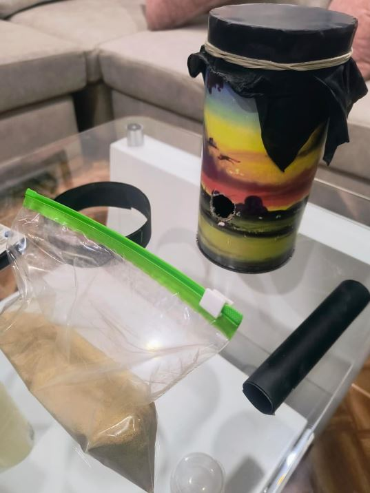
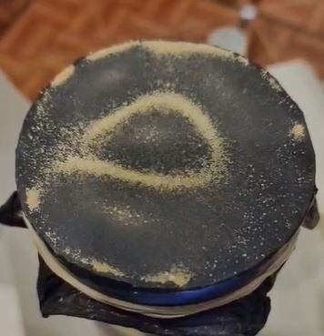
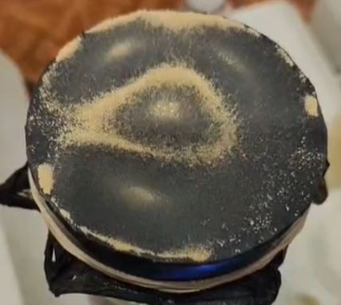
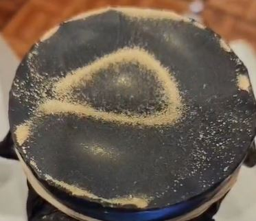
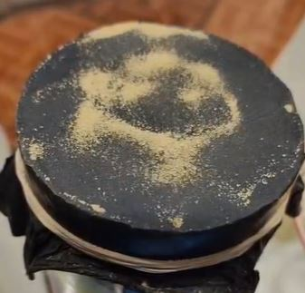
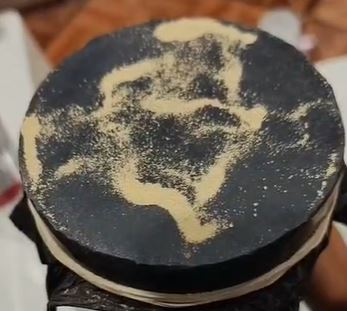
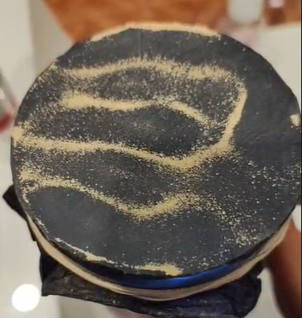
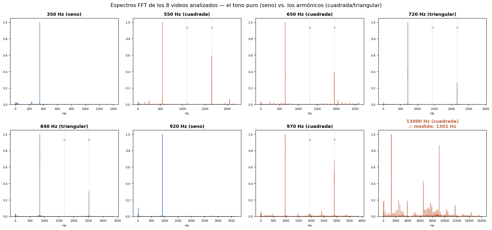
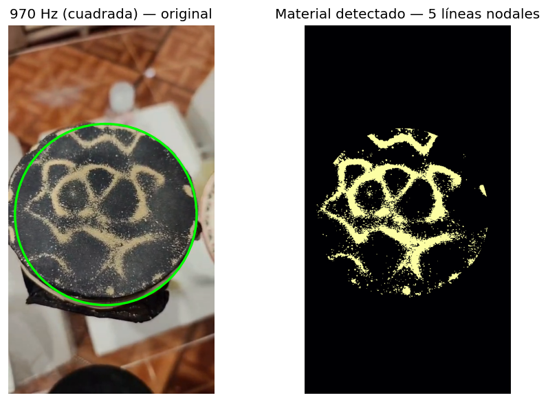

Experimento de Chladni sobre una membrana circular: 27 frecuencias, tres formas de onda y el análisis en Python que confirma la física detrás de cada patrón.
Una onda sonora no se ve. Pero si la dejamos vibrar bajo una superficie cubierta de un material ligero, la materia se acomoda sola y dibuja la forma oculta de la vibración.
Cuando una superficie elástica entra en resonancia a cierta frecuencia, no vibra igual en todas partes: hay zonas que se mueven mucho (vientres) y zonas que se quedan completamente quietas. A esas zonas quietas las llamamos líneas nodales. Si esparcimos arena sobre la superficie, los granos saltan en las zonas que vibran y van cayendo, hasta quedarse atrapados justo sobre las líneas que no se mueven. El resultado es un dibujo nítido del modo de vibración: una figura de Chladni.
El montaje clásico de Ernst Chladni (siglo XVIII) usaba una placa metálica rígida frotada con un arco de violín. En este experimento cambiamos la placa por una membrana circular tensada: un guante de nitrilo estirado sobre una cavidad cilíndrica, excitado con sonido. Ese cambio es importante, porque una membrana y una placa siguen ecuaciones físicas distintas. Una membrana flexible vibra siguiendo las llamadas funciones de Bessel, y eso es exactamente lo que veremos reflejado en los patrones.
A lo largo de este informe documentamos los patrones obtenidos en 27 configuraciones distintas (frecuencias de 100 Hz a 22 000 Hz, con ondas senoidal, cuadrada y triangular), y verificamos con análisis de audio y video en Python de ocho de ellos que lo que observamos coincide con la teoría.
Observar y caracterizar los patrones de ondas estacionarias que se forman sobre una membrana circular excitada con sonido a distintas frecuencias, y relacionarlos con la teoría de modos normales de vibración de una membrana.
Imagina una cuerda de guitarra. Al pulsarla vibra, pero sus extremos están fijos y nunca se mueven. Si la haces sonar en su tono más agudo, aparece además un punto quieto en la mitad. Esos puntos quietos se llaman nodos, y aparecen porque la onda rebota en los extremos y se superpone consigo misma formando una onda estacionaria: un patrón que parece quedarse en su lugar en vez de avanzar.
Una membrana es como una cuerda, pero en dos dimensiones. En vez de puntos quietos aislados, tiene líneas enteras quietas que cruzan la superficie. La arena se acumula sobre esas líneas porque son los únicos lugares donde no la sacude la vibración. Cada figura de Chladni es, literalmente, un mapa de las zonas quietas de la membrana a esa frecuencia.
Para describir cómo se mueve cada punto de la membrana usamos $u(r,\theta,t)$: el desplazamiento (hacia arriba o abajo) de un punto situado a una distancia $r$ del centro y a un ángulo $\theta$, en el instante $t$. La física dice que ese movimiento obedece la ecuación de onda en dos dimensiones:
La velocidad $c$ depende de dos cosas intuitivas: qué tan tensa está la membrana ($T$) y qué tan pesada es por unidad de área ($\sigma$). Más tensa = ondas más rápidas = tonos más agudos; más pesada = ondas más lentas = tonos más graves. Es la misma razón por la que una cuerda fina y tensa suena más aguda que una gruesa y floja:
Al resolver la ecuación para una membrana circular sujeta por todo el borde, las soluciones —los modos de vibración— tienen esta forma:
La fórmula solo dice tres cosas multiplicadas. (1) La parte angular $\cos(m\theta)$ marca cuántas líneas quietas pasan por el centro como radios de una rueda: ese número es m. (2) La parte radial, que es la función de Bessel $J_m$, marca cuántos anillos quietos hay (círculos concéntricos): ese número está en n. (3) La última parte solo dice que todo eso sube y baja con el tiempo. Así, el modo $(m,n)$ es simplemente "tantas líneas en cruz, tantos anillos".
¿Y qué es la función de Bessel $J_m$? Es una curva que oscila parecido a un coseno, pero amortiguándose hacia afuera. Aparece siempre que un problema tiene simetría circular (tambores, ondas en un estanque, lentes). Lo único que necesitamos de ella son sus ceros: los puntos donde la curva cruza el cero, que es donde la membrana queda quieta. A esos ceros los llamamos $\alpha_{mn}$.
Como el borde de la membrana está sujeto, ahí el desplazamiento debe ser cero siempre. Esa condición obliga a que solo ciertas frecuencias "encajen" en la membrana, igual que en una cuerda solo encajan ciertas notas. Esas frecuencias permitidas son:
Aquí está la diferencia clave con una cuerda. En una cuerda, las notas permitidas son múltiplos exactos de la primera (1×, 2×, 3×…): por eso suena "musical". En una membrana, las notas permitidas siguen los ceros de Bessel, que no son múltiplos exactos (1×, 1.59×, 2.14×, 2.30×…). Por eso un tambor suena más "ruidoso" que una cuerda: sus tonos no forman una serie armónica limpia. La consecuencia que veremos en el experimento es directa: a mayor frecuencia, modo más alto, y por tanto más líneas nodales dibujadas.
Esta tabla ordena los primeros modos por frecuencia creciente. Fíjate en la última columna: el número de líneas nodales sube con la frecuencia. Esa es la predicción que el experimento debe confirmar.
| Modo (m, n) | Cero αmn | f / ffundamental | Líneas en cruz (m) | Anillos (n−1) | Total nodos |
|---|---|---|---|---|---|
| (0, 1) | 2.405 | 1.00× | 0 | 0 | 0 |
| (1, 1) | 3.832 | 1.59× | 1 | 0 | 1 |
| (2, 1) | 5.136 | 2.14× | 2 | 0 | 2 |
| (0, 2) | 5.520 | 2.30× | 0 | 1 | 1 |
| (3, 1) | 6.380 | 2.65× | 3 | 0 | 3 |
| (1, 2) | 7.016 | 2.92× | 1 | 1 | 2 |
Este simulador resuelve la fórmula de arriba en vivo. Cada botón es un modo $(m,n)$; las zonas claras son donde se juntaría la arena (las líneas nodales). Compara estos dibujos teóricos con tus fotos reales más abajo.

Se usó una alcancía cilíndrica de cartón como cavidad resonante. Sobre su boca se tensó un guante de nitrilo sujeto con cauchos, que tras probar bolsa plástica, vinipel y globo resultó ser la mejor membrana. Como material indicador se usó arena. Un parlante reproduce los tonos generados con una aplicación simple.
El parlante (el cilindro negro) se acopla al orificio lateral para los tonos graves, o se acerca por encima de la membrana para los agudos.
El orificio lateral convierte la cavidad en un resonador de Helmholtz: el aire encerrado actúa como un resorte que transmite el sonido del parlante a la membrana. Este acoplamiento funciona bien con tonos graves (aproximadamente por debajo de 700 Hz). Por encima, la longitud de onda del sonido se vuelve comparable al tamaño del orificio y el acoplamiento pierde eficiencia, por lo que fue necesario acercar el parlante directamente a la membrana para excitar bien el patrón.
Todos los patrones registrados, de 100 Hz a 22 000 Hz. Usa los filtros para comparar por forma de onda, o toca cualquier figura para ampliarla. Observa cómo el patrón se vuelve más complejo —más líneas nodales— a medida que sube la frecuencia.
El experimento se puede leer en dos ejes: cómo cambia el patrón con la frecuencia, y cómo cambia con la forma de onda. Los analizamos por separado.
Recorriendo las figuras de grave a agudo se observa una progresión clara, que se puede dividir en cuatro regímenes:
A frecuencias muy bajas (100 Hz, 300 Hz) la arena apenas se organiza: se ven manchas difusas sin un patrón definido. La razón física es que no existe ningún modo resonante de la membrana tan bajo. La membrana tiene una frecuencia fundamental mínima por debajo de la cual no hay onda estacionaria que ordene el material; lo que vemos es solo a la arena sacudiéndose sin estructura.
Entre 350 y 700 Hz aparecen las primeras líneas nodales nítidas: una sola línea curva (modos con 1 nodo, como el $(1,1)$) que evoluciona hacia dos o tres lóbulos (modos $(2,1)$ y $(3,1)$). Son los patrones más limpios y simétricos, porque corresponden a los modos más bajos y mejor definidos. Aquí el acoplamiento por el orificio funciona de forma óptima.
Desde ~720 Hz fue necesario acercar el parlante a la membrana. Los patrones (840, 920, 970, 1220 Hz) ganan complejidad: aparecen combinaciones de líneas en cruz y anillos (modos con $m$ y $n$ mayores). Las figuras de 920 Hz y 1220 Hz muestran estructuras simétricas elaboradas, ya difíciles de asignar a un solo modo puro.
A 2170, 4887, 13000 y 22000 Hz los patrones se vuelven celulares: una retícula densa de pequeñas zonas separadas por finas líneas de arena. Esto corresponde a modos de orden muy alto, donde caben muchísimas líneas nodales en la membrana. Es la confirmación visual más espectacular de la teoría: a mayor frecuencia, mayor densidad nodal.
A una misma frecuencia se compararon las tres formas de onda. La diferencia es real pero sutil. Aquí están las tres a 440 Hz:



Y a 720 Hz, donde el patrón es más complejo:



La onda senoidal es un tono puro: una sola frecuencia. Las ondas cuadrada y triangular no son puras: por el teorema de Fourier, equivalen a sumar muchas senoidales (la fundamental más sus armónicos). Eso significa que excitan varias frecuencias a la vez, depositando más energía en la membrana y marcando el patrón más rápido y con más contraste. La triangular en particular formó el patrón visiblemente más rápido en varias pruebas.
Para comprobar esto con datos y no solo a ojo, se hizo un análisis del audio en Python.
Para comprobar todo esto con datos y no solo a ojo, se extrajo el audio de ocho videos y se les aplicó la Transformada Rápida de Fourier (FFT), que descompone un sonido en las frecuencias que lo forman. Si la onda cuadrada realmente contiene armónicos, la FFT debe mostrarlos como picos adicionales junto a la fundamental. Los espectros completos y la tabla de mediciones están en la sección de resultados.
Se analizaron ocho videos con FFT. En siete de ellos la frecuencia medida coincide con la programada con un error menor al 0.2 %, validando el control del experimento. El octavo (13 000 Hz) reveló una limitación del equipo de grabación que se explica más abajo.
| Frecuencia | Onda | Medida FFT | Error | Armónicos detectados |
|---|---|---|---|---|
| 350 Hz | seno | 349.9 Hz | 0.0 % | ninguno (tono puro) |
| 550 Hz | cuadrada | 550.9 Hz | 0.2 % | 3f, 5f |
| 650 Hz | cuadrada | 649.3 Hz | 0.1 % | 3f |
| 720 Hz | triangular | 720.4 Hz | 0.1 % | 3f |
| 840 Hz | triangular | 840.8 Hz | 0.1 % | 3f |
| 920 Hz | seno | 918.8 Hz | 0.1 % | ninguno (tono puro) |
| 970 Hz | cuadrada | 970.8 Hz | 0.1 % | 3f |
| 13 kHz | cuadrada | 1301 Hz ⚠ | 90 % | distorsionados |

El caso de los 13 000 Hz y el límite del micrófono. En este video la FFT no midió 13 kHz sino 1301 Hz, con un espectro lleno de picos desordenados. Esto no es un fallo del experimento: el patrón en la membrana sí se formó (y es de los más densos y bonitos). Lo que falla es la grabación: el micrófono de un teléfono está optimizado para la voz humana y empieza a distorsionar o atenuar las frecuencias muy altas, plegándolas hacia abajo (un efecto relacionado con el aliasing). Es una limitación instrumental conocida y un buen recordatorio de que medir un fenómeno y registrarlo fielmente son dos retos distintos.
El segundo análisis procesa el video cuadro a cuadro: aísla la membrana con un detector de círculos y separa la arena clara del fondo oscuro, contando las regiones del patrón como medida del orden modal.

Los ocho videos analizados, en orden de frecuencia creciente:
El número y la complejidad de las líneas nodales crecen de forma sistemática con la frecuencia, desde una sola línea curva a ~440 Hz hasta los patrones celulares densos por encima de 13 000 Hz. Esto confirma directamente la predicción de la teoría de Bessel para una membrana circular.
Las ondas cuadrada y triangular marcan los patrones con más nitidez y rapidez que la senoidal. El análisis FFT lo explica: contienen armónicos (picos en 3f, 5f…) que la senoidal no tiene, aportando energía extra a la membrana.
Las frecuencias medidas por FFT coinciden con las programadas (error < 0.2 %), de modo que cada patrón corresponde de forma fiable a su frecuencia etiquetada.
A diferencia del Chladni clásico con placa rígida, aquí los patrones siguen los modos de una membrana flexible (funciones de Bessel). Reconocer esto es clave para interpretar correctamente las figuras observadas.
No hay patrones por debajo de ~350 Hz (no existe un modo tan bajo) y a altas frecuencias hubo que acercar el parlante (el orificio deja de acoplar bien). El análisis FFT también reveló que el micrófono del teléfono no registra fielmente frecuencias muy altas (el video de 13 kHz se midió como 1301 Hz). Y al ser una membrana casera con tensión no perfectamente uniforme, los patrones son algo menos simétricos que el modelo ideal. Todas son limitaciones esperables del montaje, no errores de medición.